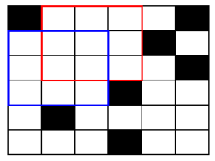

Để đưa người lên Sao Hỏa, các nhà nghiên cứu đã vẽ bản đồ bề mặt của sao. Bản đồ sao Hỏa là một ma trận hình vuông n dòng n cột được đánh số hàng từ 1 đến n theo thứ tự từ trên xuống dưới, đánh số cột từ 1 đến n theo thứ tự từ trái qua phải. Tại ô ở dòng i cột j có giá trị là 1 nếu vị trí đó là núi và có giá trị là 0 nếu vị trí đó là địa hình bằng phẳng.

Để an toàn trong việc hạ cánh phi thuyền, phi hành gia cần xác định một hình vuông lớn nhất mà trong hình vuông đó chỉ bao gồm các ô có địa hình bằng phẳng. Bạn hãy giúp phi hành gia xác định cạnh của hình vuông lớn nhất này nhé.
Dữ liệu nhập:
- Dòng thứ nhất là số nguyên n (2 ≤ n ≤ 1.000)
- Trong n dòng tiếp theo mỗi dòng gồm n số 0 (địa hình bằng phẳng) hoặc số 1 (địa hình núi). Mỗi số cách nhau một khoảng trắng.
Dữ liệu xuất:
- Là số nguyên xác định chiều dài cạnh hình vuông địa hình bằng phẳng lớn nhất. Nếu bản đồ chỉ gồm toàn núi, in ra 0.